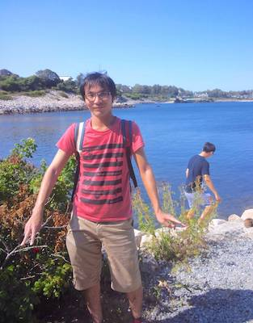

Yuta Kawai のページ

(2021 年 10 月 9 日 更新)
河合 佑太
連絡先: yuta.kawai (at) riken.jp
現所属
理化学研究所 計算科学研究センター
複合系気候科学研究チーム 特別研究員
研究テーマ
- 次世代気象気候モデルを念頭にした力学コアの高度化
- 全球ラージ・エディ・シミュレーションに向けた力学コアの必要精度に関する研究
- FE-Project: 不連続ガラーキン法を用いた流体計算ライブラリ, 大気モデルの構築
- SCALE の流体スキームの拡充
- 全球ラージ・エディ・シミュレーションに向けた力学コアの必要精度に関する研究
- 惑星気候モデルの開発
- 大気海洋海氷結合モデルを用いた惑星気候シミュレーション
- 海惑星気候の太陽定数依存性の研究
- 海惑星気候の太陽定数依存性の研究
博士課程
- 海洋大循環モデル・海氷モデルの開発
- 大気海洋海氷結合モデルの開発
- 博士論文: 大気海洋海氷結合モデルの開発と海惑星気候に対する海洋大循環の影響に関する数値実験 (投稿論文準備中のため電脳関係者のみ閲覧可能)
- 領域非静力学大気モデル SCALE の流体スキームの拡充
修士課程
- 修士論文: 高精度有限体積法による非静力学惑星大気循環モデルの開発
- 立方球面格子による大気モデル(力学コア)の開発
- 正二十面体格子による大気モデル(力学コア)の開発